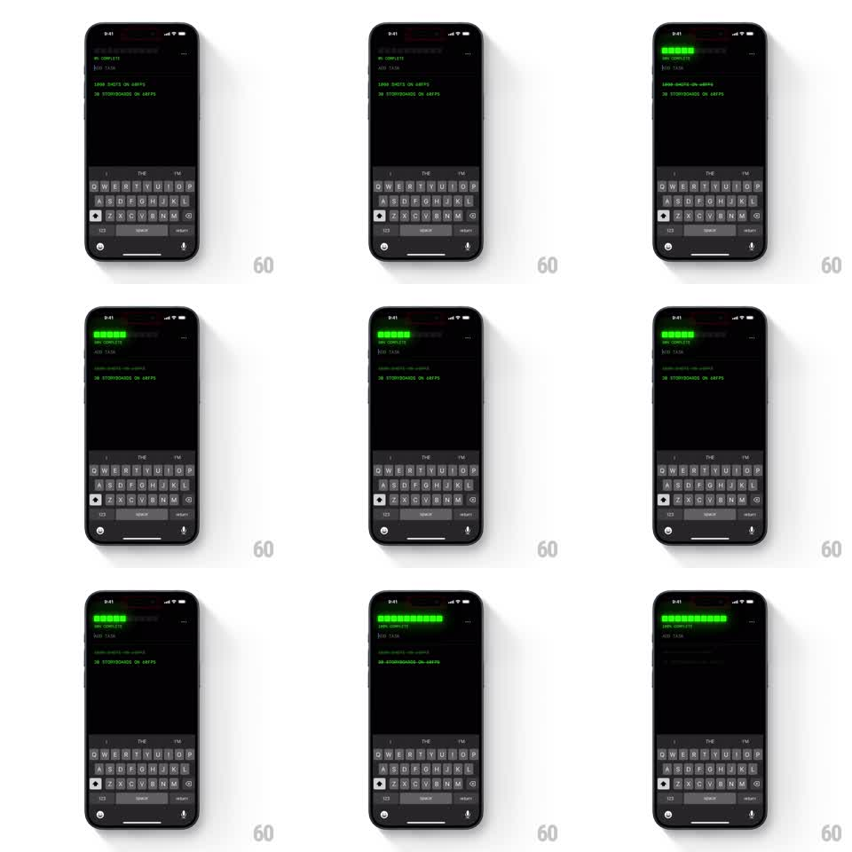

Media
Frame-by-frame

Rebuild this interaction 1:1: the CLI todo's completion - tapping a task strikes it through and the glowing segmented progress bar at the top fills one segment at a time as the percentage ticks up.

Rebuild this interaction 1:1: the CLI todo's completion - tapping a task strikes it through and the glowing segmented progress bar at the top fills one segment at a time as the percentage ticks up. ## Integration Integration: stack-agnostic spec - springs given as stiffness/damping, timed motions as duration + curve; map every value to your framework and animation library of choice. ## Scene Retro terminal todo app, black background with green phosphor text: a segmented progress bar with percentage readout up top, "ADD TASK" prompt, a list of tasks, and the keyboard docked below. ## Motion spec Pattern: sequential segment fill with strikethrough, ~700ms per completion. - Tap a task: its text strikes through (the line draws left to right, 200ms) and the text dims to a darker green. - The progress bar fills left to right in discrete segments: each new segment lights up in sequence (60ms per segment, cascading), each lit segment glowing with a soft bloom. - The percentage text ticks up to the new value in sync with the segment fill, rolling digit-style. - Uncompleting reverses it: segments extinguish right to left in sequence and the strikethrough fades out. - At 100% the full bar pulses once (glow swell and settle, 400ms). ## Calibration - The fill is segment-by-segment, never a smooth bar - the cascade between segments is the whole effect. - The strike and the bar fill start on the same tap; the bar does not wait for the strike to finish. ## Reduced motion Strikethrough and bar state change instantly. ## Don't miss - The glow: each lit segment blooms against the black - a flat fill loses the phosphor feel. - Completed tasks keep their place in the list; nothing re-sorts on completion.